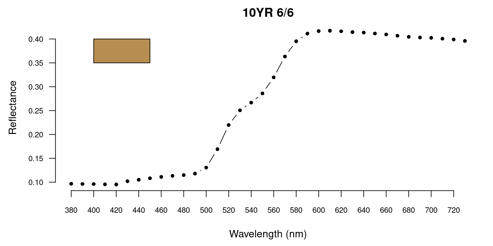

vignettes/Munsell-color-conversion.Rmd
Munsell-color-conversion.RmdSoil color is most often described using the Munsell color
system. The aqp package provides several functions for
converting to and from Munsell color notation, into other
representations suitable for on-screen display (sRGB) or numerical
analysis (CIELAB).
Conversion of Munsell notation to “something” that can be displayed
on-screen (sRGB color representation) is probably the most common color
transformation applied to soil morphology data. The
munsell2rgb() function is convenient for this operation
when Munsell notation has been split into vectors of hue, value, and
chroma. These could be columns in a data.frame or separate
vectors. The parseMunsell() function is convenient when a
full Munsell notation is given as a character vector. Note that
parseMunsell() is a simplified wrapper to
munsell2rgb(). For example, converting
10YR 4/6 with either function can return:
#805921FF, or0.5002233 0.3489249 0.1287694,
or40.95021 10.31088 37.49513
Selection of the closest n Munsell color “chips”, given
sRGB or CIELAB colorspace coordinates is performed with the
col2Munsell() function. Input to this function can be
colorspace coordinates, named colors (e.g. red), or
hex-notation of a color. For example, the selection of the closest
Munsell chip for CIELAB coordinates
(51.4337, 9.917916, 38.6889) results in
10YR 5/6 with a reported sigma (error) of
1.5e-6. This error is estimated as the CIE2000
distance between the source CIELAB coordinates and the CIELAB
coordinates of the closest Munsell chip.
A representative Munsell color can be estimated from reflectance
spectra in the range of 380nm to 730nm with the
spec2Munsell() function.

Neutral colors are commonly specified two ways in the Munsell system:
N 3/ or N 3/0, either format will work with
munsell2rgb() and parseMunsell().
Non-standard Munsell notation (e.g. 3.6YR 4.4 / 5.6),
possibly collected with a sensor vs. color book, can be approximated
with getClosestMunsellChip(). A more accurate conversion
can be performed with the munsellinterpol
package..
# Munsell -> hex color
parseMunsell('5PB 4/6')#> [1] "#476189FF"
# Munsell -> sRGB
parseMunsell('5PB 4/6', return_triplets = TRUE)#> r g b
#> 1 0.2774433 0.3816871 0.5373067
# Munsell -> CIELAB
parseMunsell('5PB 4/6', returnLAB = TRUE)#> L A B
#> 1 40.78393 1.583845 -25.09816
# hex color -> Munsell
col2Munsell('#476189FF')#> hue value chroma sigma
#> 1 5PB 4 6 0.2196242
# neutral color
parseMunsell('N 5/')#> [1] "#313233FF"
# non-standard notation
getClosestMunsellChip('3.3YR 4.4/6.1', convertColors = FALSE)#> [1] "2.5YR 4/6"